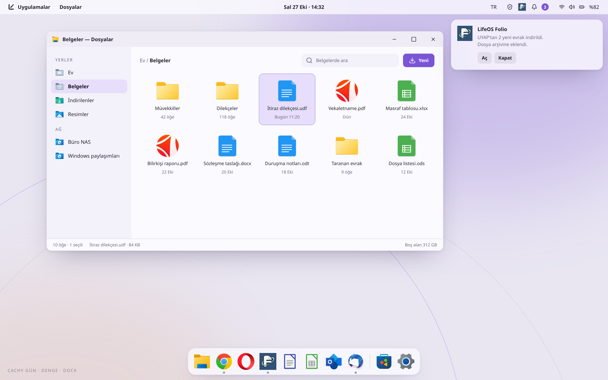
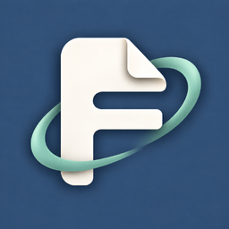
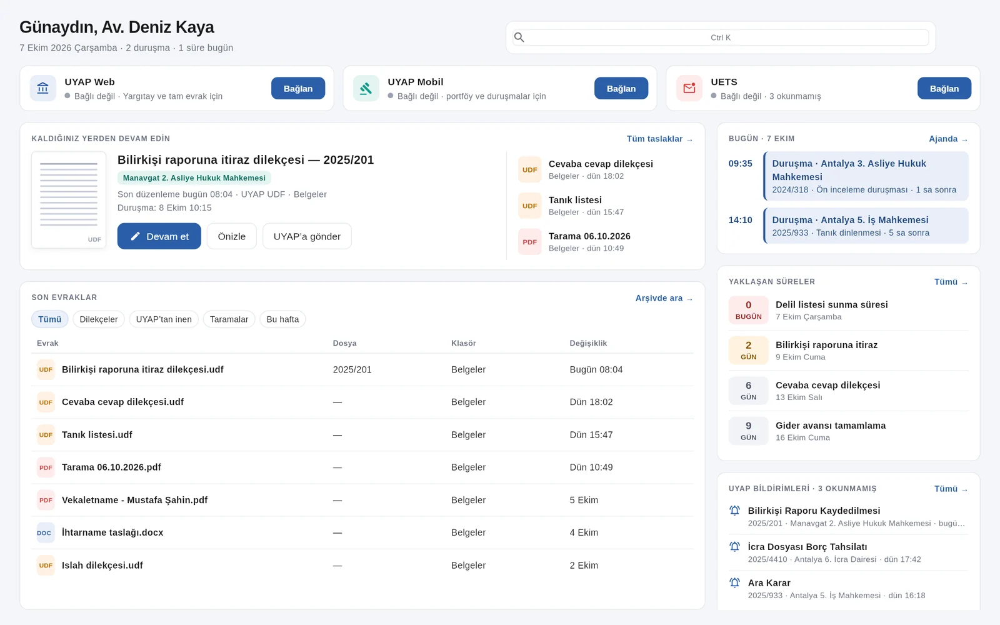

Standart kurulum
Günlük kullanım ve belge işleri için.
- Türkçe Plasma, Yönetim, Mağaza ve Konsol
- Belgelerin için LifeOS Ofis
- Chrome, Opera, Whatsie ve NAPS2
- Windows yazı tipleri ve medya kodekleri
Word, UDF ve PDF belgelerini LifeOS Ofis’te aç.
KENDİ UYGULAMALARIYLA BİR LINUX MASAÜSTÜ
Ada’dan Folio’ya, günlük işlerin için geliştirilen araçlar. Aynı masaüstünde, bir arada.

LIFEOS ADA
Saat, bildirimler, medya, hızlı ayarlar ve ajanda. Ekranın üstünde; ihtiyaç duyduğunda açılır, işine döndüğünde çekilir.

Örnek dosyanın duruşmasına
30 dakika kaldı.
Ada’nın sayfalarını seçerek keşfet.
KURULUM SEÇENEKLERİ
Standart ve Avukat. Aynı masaüstü, farklı çalışma araçları.
Günlük kullanım ve belge işleri için.
Word, UDF ve PDF belgelerini LifeOS Ofis’te aç.
Dava dosyaları, dilekçeler ve büro işleri için.
Folio için avukat ve büro bilgilerini istersen kurulumda ekle.
Bazı uygulamalar ilk açılışta internet bağlantısıyla kurulur. Durumlarını LifeOS Karşılama’dan izleyebilirsin.
LIFEOS FOLIO
Evraklarını, dilekçelerini ve çalışma arşivini tek yerde tut. Duruşmaları, süreleri ve büro işlerini ajandada gör.
LifeOS uygulamalarını tanı
Sistem yönetiminden belgelere, ekran paylaşımından oyuna.
Standart ve Avukat kurulum seçeneklerini incele. Kendi araçlarınla çalışmaya başla.
ISO indirme bağlantısı henüz yayımlanmadı. Kurulumdan önce kişisel dosyalarının yedeğini al.